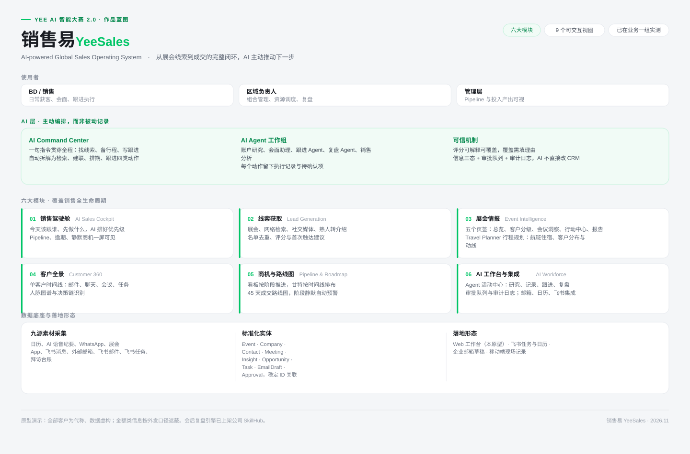
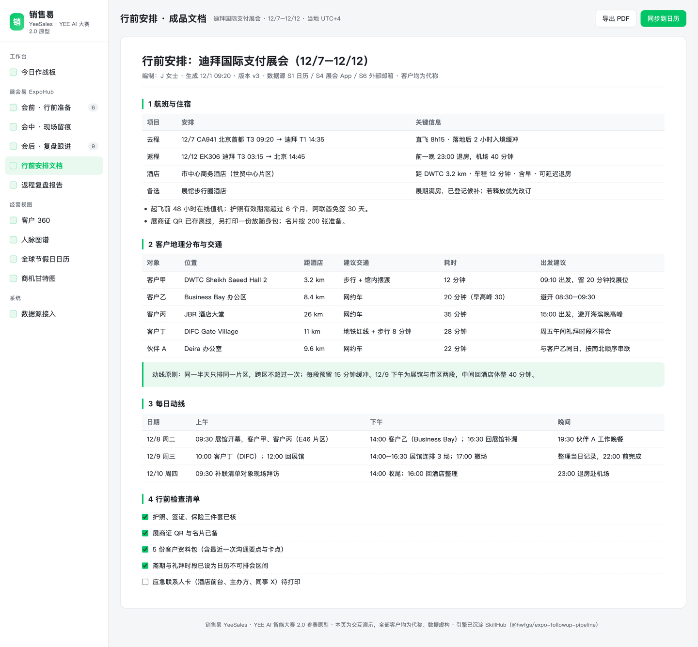
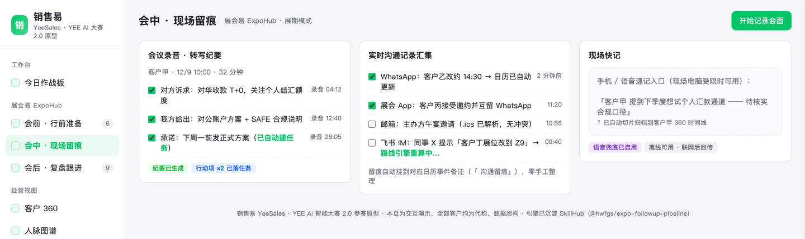
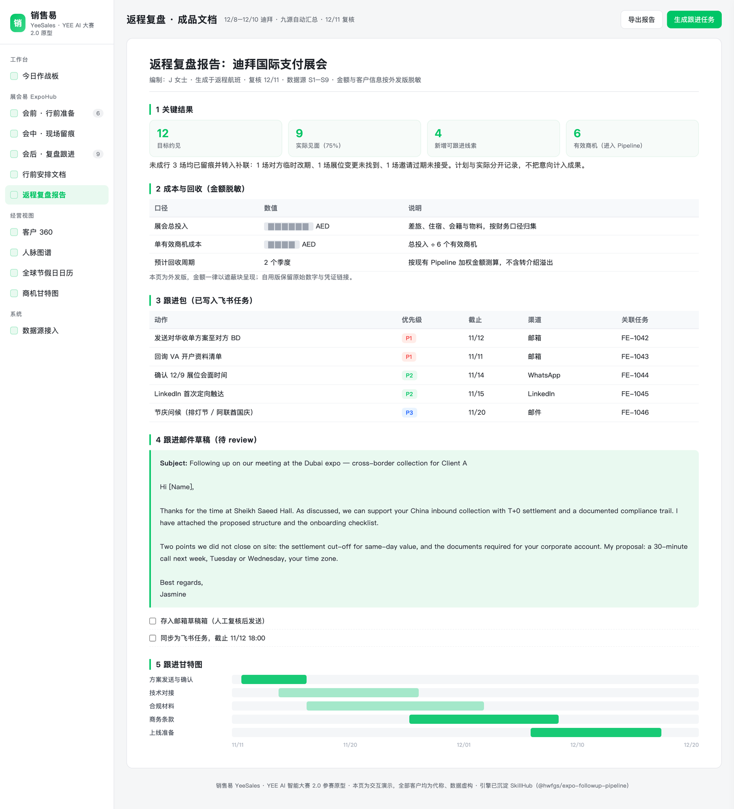
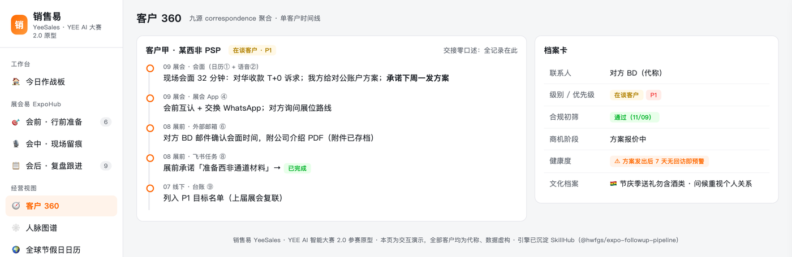

YEE AI 智能大赛 2.0 · 作品说明（v0.5）
参赛方向：方向 1 内部提效（可平移方向 2 对外赋能）。作品形态：Skill + Agent 工作流，已实战验证，规划演进为 SaaS 平台。
关键点摘要
| 评分维度 | 结论 | 关键证据 |
|---|---|---|
| 商业价值 | 已完成「内部自用 → 部门复制 → 对外产品化」三阶段路径设计，第一段已跑通并有可复用交付物 | 会后引擎已上架公司 SkillHub（@hwfgs/expo-followup-pipeline v1.0.5），同事安装即用；对外版本面向出海企业的跨文化获客场景，按坐席或按展会项目订阅 |
| 使用情况与可行性 | 2026 年 9 月迪拜单次行程同期参加三场活动，全流程跑通 MVP，非演示数据 | 三场活动、14 场展会 App 约见、8 场确认并落日历、12 个会话全量回收、4 条无日历记录的新线索全部进入补联清单 |
| 可量化收益 | 单次展会会后整理从 1–2 人日压缩至 0.5 小时，整理工时下降约 90% | 同一套流程产出跟进表、任务、日历与台账；按 20 人团队、年均 4 次展会测算，年节省约 120 人日 |
| 创新性 | 用「九源证据链 + 日历为唯一事实源」解决线索失真，用「跨文化 / 时区地理 / 国际合规」构成出海差异化 | 渠道显示已约但日历无记录即判定未会面，从机制上避免把计划计为成果；节假日语气判定、斋期排会、两级脱敏均为流程内建 |
| 可访问性 | 外网可直接访问，无登录、无验证码，正文与截图对 Agent 可读 | https://jasmine2886.github.io/yeesales/ |
三个数字概括：3 场活动验证、8 场会面落地、90% 整理工时下降。
价值主张
| 编号 | 价值 | 实现方式 |
|---|---|---|
| 1 | 线索不漏 | 九源交叉回收，未联系对象全部进入补联清单，过期邀请与未回复消息不再流失 |
| 2 | 商机可管 | 每个商机一条时间线，阶段静默超过 14 天自动预警并给出建议动作 |
| 3 | 能力可复制 | 方法论沉淀为公司级 Skill，同事安装即用，新人上手周期从数周缩短至 1 天 |
1 产品总览
产品分三层：接入层负责多渠道获客，智能层提供出海场景的差异化能力，落地层将结果转化为任务与项目管理动作。总体架构见图 1。

- 接入层：展会、网络检索、社交媒体、熟人介绍四路获客，统一汇入同一套证据体系。
- 智能层：全球节假日与文化日历、时区感知排会、差旅路线优化、国际合规初筛与数据脱敏、多语言语气校准。
- 落地层：跟进任务自动创建、日历提醒（不添加任何参会人）、Pipeline 与台账回填、复盘报告与商机甘特图。
核心模块「展会易」按会前、会中、会后三段组织：
| 阶段 | 能力 |
|---|---|
| 会前 | 线索挖掘（目标名单与逐家背景简报）、会晤预定（跨时区与文化校验的邀约、展会 App 批量约见）、会前沟通要点备忘（含商务礼仪与话题边界）、现场作战计划、差旅路线规划 |
| 会中 | 现场沟通即时记录（语音转写兜底）、历史沟通记录自动汇集（覆盖九源）、录音转结构化纪要并拆解行动项 |
| 会后 | 九源复盘、跟进待办表（按截止时间排序）、补联专段、任务与日历自动落地、商机甘特图 |
九源指九类沟通痕迹：S1 协作平台日历（真相锚点）、S2 AI 语音纪要、S3 WhatsApp、S4 展会 App、S5 协作平台 IM、S6 外部邮箱、S7 协作平台邮箱、S8 协作平台任务、S9 作战台账。下文涉及证据出处时沿用该编号。
2 开发背景
2.1 问题场景
国际展会、国内行业展会与日常拜访，一线 BD/销售的工作流一致：找线索、约见面、现场沟通、会后跟进。沟通痕迹分散在九类渠道中，任何一个渠道遗漏，即损失一条线索。
2.2 四个主要问题
| 编号 | 问题 | 影响 |
|---|---|---|
| 2.2.1 | 联系人流失 | 现场临时结识、未约成的对象（过期邀请、未回复）缺乏记录，恰是后续转化希望较高的一批 |
| 2.2.2 | 整理耗时 | 会后逐渠道人工翻查，单次展会约 1–2 个工作日，线索热度随之衰减 |
| 2.2.3 | 现场受限 | 出差期间电脑关闭时移动端无法访问工作台，只能语音记录，回程后仍需二次整理 |
| 2.2.4 | 口径不一 | 客户自报数据、现场口头承诺、台账记录互相对不上，缺乏交叉核验机制 |
3 价值
3.1 收入侧
- 3.1.1 补联清单全覆盖：过期邀请、未回复消息、临时结识对象统一进入「未联系 · 待补联」，附建议动作与触达渠道。
- 3.1.2 商机静默预警：阶段停留超过 14 天自动提醒，建议动作为动词开头、可直接转发客户。
- 3.1.3 转化可归因：每条商机的证据链（S1–S9）可回溯，展会投入产出首次可量化核算。
3.2 效率侧
| 指标 | 人工现状 | 使用销售易后 | 状态 |
|---|---|---|---|
| 单次展会跟进整理 | 1–2 个工作日 | 0.5 小时内完成初稿 | 已实测 |
| 会前单客准备 | 0.5–1 小时 | 5 分钟生成简报 | 规划中 |
| 跟进任务落地 | 整理后手工创建 | 产出即生成任务、日历与甘特图 | 已实测 |
| 线索遗漏控制 | 无量化手段 | 九源自检表逐项核对 | 已内建 |
3.3 组织侧
- 3.3.1 客户 360 时间线：九源记录聚合为单客户视图，人员交接从口头说明变为可查记录。
- 3.3.2 转介绍量化：熟人引荐链路（谁引荐、转化结果）首次可见、可追踪。
- 3.3.3 新人上手：Skill、模板与九源方法论随流程分发，上手周期缩短至 1 天。
3.4 商业化路径
| 阶段 | 对象 | 形态 | 状态 |
|---|---|---|---|
| 3.4.1 内部自用 | 本人及海外子公司部 | Skill + Agent 工作流，单次展会端到端 | 已跑通 |
| 3.4.2 部门复制 | 全易宝 BD/销售 | SkillHub 分发，按业务线配置接入层 | 可复制，待推广 |
| 3.4.3 对外产品化 | 出海企业（支付、金融科技、制造业）与展会主办方 | SaaS 订阅，按坐席或按展会项目计费；提供跨文化获客、多渠道跟进、合规初筛三个增值模块 | 规划中 |
对外版本的差异化不在「再多一个 CRM」，而在三件出海企业普遍缺失的能力：跨文化沟通判断、时区与差旅编排、国际合规与数据脱敏。这三项在内部场景已被验证，迁移到外部客户时无需重构。
3.5 投入产出
- 直接可量化：单次展会节省约 1.5 人日。按 20 人团队、年均 4 次展会或差旅测算，年节省约 120 人日。
- 杠杆部分：追回一条高价值「未联系」线索的转化收益，即超过全部整理工时投入。
- 边际成本：新增一名使用者仅需安装 Skill 并配置数据源，无额外服务器与实施成本。
4 可验证成果
4.1 完成情况
| 状态 | 内容 |
|---|---|
| 已上线并实测 | 展会易会后段（九源跟进流水线，SkillHub v1.0.5）；全球节假日与文化日历（28 国家与地区、402 个全天事件，长期使用中）；会前现场作战计划（分阶段行动顺序与重点名单）；地理聚类行程安排（人工执行版） |
| 规划中 | 会前简报批量生成（接入网络检索与社交媒体两路）；甘特图产品化视图；SaaS 平台界面；对外商业化版本 |
4.2 体验地址
- 产品原型（外网）：https://jasmine2886.github.io/yeesales/ ，含作品导览、作品说明全文、9 个可交互视图。
- SkillHub：
@hwfgs/expo-followup-pipeline（v1.0.5），展会易会后引擎，已发布至公司 SkillHub 海外分公司空间。 - 全球节假日与文化日历：28 国家与地区、402 个全天事件、179 条文化知识条目、15 条国别覆盖规则，含三语气框架、伊斯兰问候礼仪、补假规则与话题护栏。
4.3 实战数据（2026 年 9 月迪拜，单次行程同期三场活动）
| 指标 | 结果 | 口径 |
|---|---|---|
| 同期参加活动 | 3 场 | Seamless Middle East（9/23–24）、Forex Expo Dubai（9/22–23）、MEA Finance Leaders in Payments（9/22） |
| 会前目标名单 | 20 人、8 阶段现场动线 | 基于官方议程与公开资料生成，附逐人背景与开场话术 |
| 展会 App 约见 | 14 场 | 4 场已确认、10 场待确认，全部纳入日历与台账 |
| 最终确认并落日历 | 8 场 | 含展会 App 与邮件两条确认渠道 |
| App 会话回收 | 12 个会话全量 | 其中 8 场回填至日历备注，会面前即可查阅线上沟通内容 |
| 新增可跟进线索 | 4 条 | 无日历记录但存在实质沟通，全部进入补联清单 |
| 会后整理工时 | 1–2 人日 → 0.5 小时 | 同一人、同一批素材，含跟进表、任务、日历与台账 |
| 外发脱敏 | 25 项敏感词零命中 | 自用版与外发版双产出 |
补充说明：会面结果按实际情况记录，未成行的约见（对方改期、展位变更、邀请过期）同样留痕并转入补联，不计入成果。
4.4 使用留痕与截图说明
随本文档提交的系统截图来自产品原型，数据为脱敏演示数据：客户名称统一为「客户甲 / 客户乙」等代称，联系人与联系方式为虚构值，不包含任何真实客户信息、报价、费率或额度。涉及真实使用场景的页面（日历排期、邮件草稿、任务清单）在对外版本中均按同一规则处理，敏感字段以遮蔽块替代；展会成本与回收口径同理，对外版仅保留遮蔽块与计算方法。
5 核心创新点
- 5.1 九源证据链与日历锚点：以出差期间日历（含现场补记）为最高优先级事实源。渠道显示已约但日历无记录，默认未会面；同一对象在多个渠道出现时按优先级合并。机制上避免把计划、意向与成果混为一谈。
- 5.2 跨文化智能：全球节假日日历内嵌于会前排会流程。每个节日先判定语气类型（可祝贺 / 仅致意 / 宗教固定用语），配伊斯兰问候礼仪、斋月不约白天、同名节日按国别覆盖等规则。能力目标不是查询时区，而是判断「当天该说什么、不该说什么」。
- 5.3 时区与地理智能：跨时区排会做四重过滤（对方时区、节假日、斋期、我方时区）；差旅路线按地理聚类将相邻客户排入同一半天，逐段给出交通方式与缓冲时间。
- 5.4 合规与脱敏内建：新线索进入 Pipeline 前完成制裁与负面信息初筛；自用版与外发版两级脱敏是流程步骤，而非事后人工过滤。
- 5.5 容错保底：任一数据源失败即标记跳过、不中断流程；语音纪要登录失败时自动降级为人工粘贴，保证流程始终产出结果。
附录 A 口径说明
- 客户一律使用代称；报价、额度、联系方式不出现在本文档（外发版脱敏标准）。
- 「已上线 / 规划中」为如实标注，各项均可在 4.1 核对验证方式。
- 4.3 数据取自 2026 年 9 月 20 日至 26 日迪拜行程的日历、展会 App、邮箱与台账记录，可逐条回溯。
- 脱敏审计（2026-11-10）：随作品提交的两份 Skill 已从公司 SkillHub 拉取线上包逐一核对，确认无客户名称、无个人联系方式、无本机路径、无凭据；本文档与网页原型通过同等敏感词扫描。
附录 B 系统截图
见图 1 至图 10（文末）：产品蓝图、今日作战板、会前行前准备与路线引擎、行前安排成品文档（航班、住宿、客户地理分布与交通）、会中现场留痕、会后九源回收、返程复盘报告（关键结果、成本回收、跟进包与邮件草稿）、客户 360、全球节假日日历、商机甘特图。
系统截图






